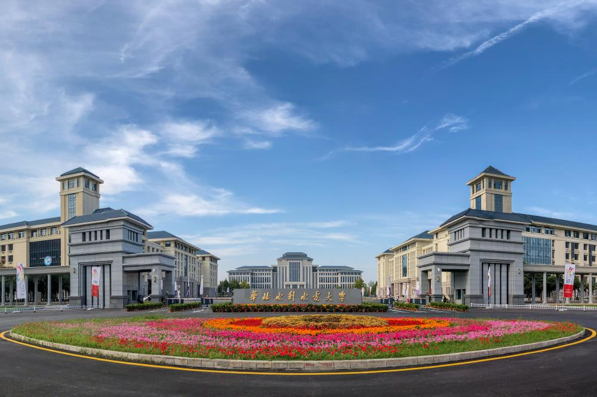

华北水利水电大学因水而生，缘水而成，在水利部、河南省和社会各界的殷切关怀下，伴随着新中国水利水电事业的发展，茁壮成长。六十多年来，学校三次搬迁，四易校址，风雨兼程，刚毅坚卓，自强不息，团结奋进，使学校发展壮大，并走向辉煌。现已发展成为以水利电力为特色，工、管、理、经、文、农、法相互渗透的多科性大学。
六十多年来，华水人薪火相承,弦歌不辍,向社会输送了10多万名优秀的水电建设者和接班人，桃李芬芳，泱泱华夏，为共和国的水利水电事业做出了重大贡献。
因水而生 奋发有为
新中国成立初期，由当时的水利部部长傅作义于1951年主持创建了学校的前身——水利部北京水利学校。隶属国家水电部管理。
1951年9月15日，中央人民政府水利部在北京创办的水利部水利学校正式开学，有学生115人，校长由水利部办公厅副主任郝执斋兼任，校址设在阜城门内巡捕厅十号（今民康胡同）。
1958年10月6日，北京水利学校与北京水利发电函授学院、北京水力发电学校合建北京水利水电学院。院长由北京水利水电科学研究院院长张子林兼任。10月6日确定为校庆日。
1958年起，先后接受越南、 尼泊尔、印度尼西亚、喀麦隆等国留学生（1966年停止，2004年恢复）。
北京水利水电学院教学楼
张子林院长受到毛泽东主席接见
1959年7月23日，北京水利水电学院一部收归水利电力部直接领导，恢复北京水力发电学校。
1960年，学校援建越南水利水电学院。
1960年9月，著名水利专家、黄河三门峡水库工程局总工程师、中科院学部委员汪胡桢调来学院任院长。
1963年，哈尔滨建筑工程学院（现并入哈尔滨工业大学）河川枢纽及水电站建筑专业合并到该校，同年开始招生。
1966年4月，周恩来总理来河北地震地区视察，于4月3日到大名县前桑园大队，在座谈时了解到华北缺乏水利人才，于是提出了将北京水利水电学院从北京迁至邯郸的建议。
1965年，学校开始招收培养研究生。
1966年5月30日，水利电力部致河北省委、省革委将北京水利水电学院迁往河北省邯郸市磁县岳城水库工地。
艰苦磨砺 矢志不移
文革开始后不久，受国内外形势影响，中央决定将北京十三所重点高校学生宿舍校外迁，北京水利水电学院为13所“京校外迁”高校之一，1969年迁往河北省磁县岳城水库工地 ，先后在岳城水库和邯郸市办学。
1970年12月23日，北京水利水电学院改名为河北水利水电学院。1971年1月1日起启用新校名。
学生宿舍
恢复调整 发奋图强
1972年11月7日，河北水利水电学院在邯郸中华大街南头建校，岳城建教学点。
1978年9月28日，河北水利水电学院改名为华北水利水电学院。
1978年，经国务院批准，在北京西郊花园村原北京水利水电学院旧址成立华北水利水电学院北京研究生部，由华北水利水电学院和北京水利水电科学研究院双重领导。
1980年1月3日，撤销岳城教学基地办公室，决定将学校的房屋、设备等暂时移交水利电力部第五工程局 。
1981年11月，国务院批准华北水利水电学院为首批硕士学位授予权单位。
1983年12月，根据水利电力部指示，华北水利水电学院北京研究生部划归北京水利电力经济管理学院领导，对外仍称华北水利水电学院北京研究生部。
学校大门
1984年9月23日，水利电力部同意汪胡桢任华北水利水电学院名誉院长。
1986年起，学校先后与中国科学院地质研究所、中国农科院农田灌溉研究所、清华大学、同济大学等20余所高等院校和科研院所联合培养博士研究生。
兴校强校 今日辉煌
1987年6月30日，国家教委同意将华北水利水电学院成建制地由河北省邯郸市迁至河南省郑州市。
1990年7月22日，华北水利水电学院第一次信息发布会在郑州市河南省科技馆举行。宣布学校1990年开始搬迁郑州，90级本科生在郑州新校入学上课。
1990年9月6日，由国务院总理李鹏题写的“华北水利水电学院”新校牌揭幕仪式在郑州新校隆重举行 。
1991年9月1日，校本部迁郑办公。遗留校舍和人员组建华北水利水电学院（邯郸）。
1992年5月经水利部批准，在华北水利水电学院北京研究生部、北京水利电力函授学院和中共水利部直属机关党校的基础上成立北京水利水电管理干部学院。
2000年2月28日，中央部属院校下放，华北水利水电学院由水利部管理为主调整为省部共建，以河南省管理为主。
2000年10月，教育部批准学校硕士研究生单独考试权资格。学校成为河南省惟一一所、全国159所之一的具有该项资格的高校。
2001年，华北水利水电学院北京研究生部和北京水利电力函授学院并入北京工业大学。
2001年6月15日，学校重建研究生处，即华北水利水电学院研究生处 。
2003年华北水利水电学院(邯郸)与河北建筑科技学院、邯郸农业高等专科学校、邯郸医学高等专科学校合并组建河北工程学院（后更名河北工程大学），原址改为河北工程大学中华南校区。
2003年3月25日，河南省计划委员会批复同意该校在龙子湖高校园区选址建设新校区，总征地面积1770亩，远期发展规模为在校全日制学生18000人，主要承担本科生和研究生教育。
龙湾湖畔
2004年5月23日，河南省教育厅同意华北水利水电学院恢复招收来华留学生。
2009年8月12日下午，河南省政府和水利部在京签订《关于共建华北水利水电学院的协议》，成为河南省继郑州大学、河南大学后第三所省部共建大学。
2009年11月，华北水利水电学院成为第十一批博士点立项单位。
2011年，学校成为教育部公布的第二批卓越工程师培养计划高校。
2012年6月，华北水利水电学院部分专业在河南本科一批招生。
2012年8月，入围国家教育部中西部高校基础能力建设工程一百所高校。
2013年1月，学校八个一级学科获高等学校副教授评审权。
2013年4月18日，华北水利水电学院更名为华北水利水电大学。
2013年7月，经国务院学位委员会第三十次会议审批通过，华北水利水电大学获批新增为博士学位授予单位。
2014年6月，被麦可思评定为河南省本科院校就业竞争力第一名。
2014年7月，荣获“2014全国大学生就业最佳企业评选”优秀组织高校奖。
2015年被教育部确定为“金砖国家网络大学”中方参与的11所高校之一，并成为“金砖国家大学联盟”中方创始成员高校。

龙子湖校区大门